Stage 1 · The question
Why hike, now?
When I hiked Lantau Trail Section 2 on 1 November 2026, the trail was packed, and almost everyone, including me, was looking for the same photo among the silver grass. It left me with a question: why has hiking become so popular in an age when so much of our free time goes to screens?
The popularity is real, but it is not simple. In the United States, outdoor participation reached a record 181.1 million people in 2024, and hiking was the most popular outdoor-specific activity, with about 63 million participants (Outdoor Industry Association, 2025). Hong Kong looks different. Visits to country parks fell by 16% between 2011 and 2019, then rebounded to 12.4 million in 2021, when hiking took off during COVID-19 (LegCo Research Office, 2022). The digital age alone cannot explain the trend, but the question led me to a bigger one, which this portfolio sets out to answer:
How do I want to live with technology in the digital age?
Hiking is a good place to look, because that is where the pull is sharpest: the same phone that leads me to a trail can also pull me out of the experience once I arrive.
Stage 2 · The key theme
My art of living, in three parts
My art of living in the digital age, and the key theme of this portfolio, is to use technology as a way into real experiences, not a replacement for them. In practice, it has three parts:
- Let technology lead me there. Apps and platforms open doors I would not find alone: a route someone else uploaded, a group of strangers heading the same way, or photos that show when a place is at its best.
- Live it instead of staging it. Once I arrive, the screen should step back, so the experience is something I live rather than something I perform for an audience.
- Share with respect. When I share afterwards, I should think about the place and the people who come after me.
My two experiences test each part. On Dragon's Back, I compared a walk that technology led and shaped from start to finish with a walk where my phone stayed in my bag. On Lantau, an app found my companions and an album cover chose the destination, and I saw what a crowd chasing one image does to a hillside.
Stage 3 · Why people hike now
Three possible answers
Research on digital detox, self-presentation on social media and online communities suggests three possible answers. None of these studies looks at hiking directly, so applying them to hiking is my own reading.
Escape
People hike to get away from screens. Digital detox, a deliberate break from devices, is widely promoted as a way to feel better, although a systematic review found mixed results for well-being (Radtke et al., 2022). Syvertsen and Enli (2020) add that detox is often sold as a way back to an "authentic" self, a promise they view critically. To judge whether a hike actually improves my life, I borrow a lens from the OECD's (2015) well-being framework. It separates people's material conditions, such as income and housing, from their quality of life, which includes work-life balance, environmental quality and subjective well-being.
Radtke et al., 2022 · Syvertsen & Enli, 2020 · OECD, 2015
Technology sends us there
Social media gives users near-limitless opportunities to manage the image they present (Hollenbaugh, 2021), and nature is a popular backdrop. Studying how people share the outdoors on Instagram, Arts et al. (2021) found that users tend to capture and post scenes they see as "Instagrammable", which produces the same images of the same places again and again. Route apps may work in a similar way, by making a trail easy to find and follow.
Hollenbaugh, 2021 · Arts et al., 2021
Community
Technology brings people together offline. Torres (2020) spent two years with a leisure group organised on Meetup and found that technology acts as a catalyst for forming groups around shared interests.
Torres, 2020
These answers can all be true at once. Each is also a view of how technology relates to real experience: something we escape, something that sends us out and shapes what we do there, or something that brings us together. My two experiences show how the three mix in one person's life, and what that means for how I want to live.
Stage 4 · Experience 1
Dragon's Back, twice
I have walked from Dragon's Back to Cape D'Aguilar twice, and the two walks could hardly have differed more in how I used my phone.
Walk 1
12 September 2026 · technology led the wayOn the first walk, on 12 September 2026, technology did almost everything. I followed a route other hikers had uploaded to Liangbulu, a route-sharing app, so I never had to think about the way. At each well-known viewpoint I took photos, and afterwards I posted the classic set on Instagram: the beach seen from the trail, the sign at the top, and the natural scenery at Cape D'Aguilar. The post received likes but no comments, and I found myself caring about who had liked and viewed it.
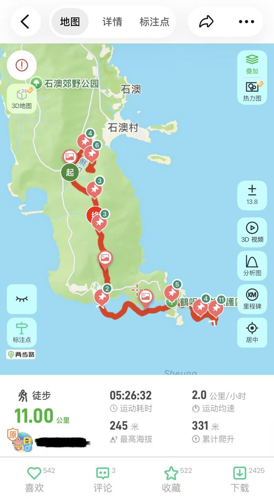
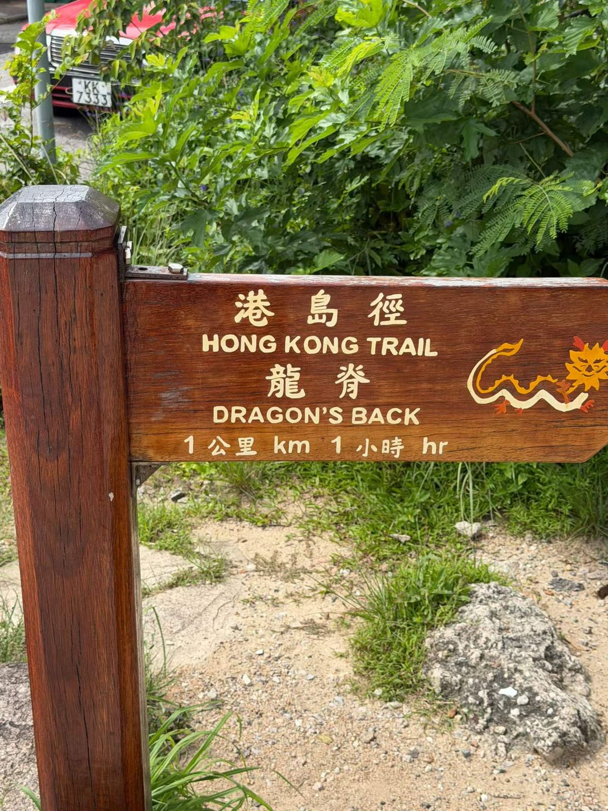
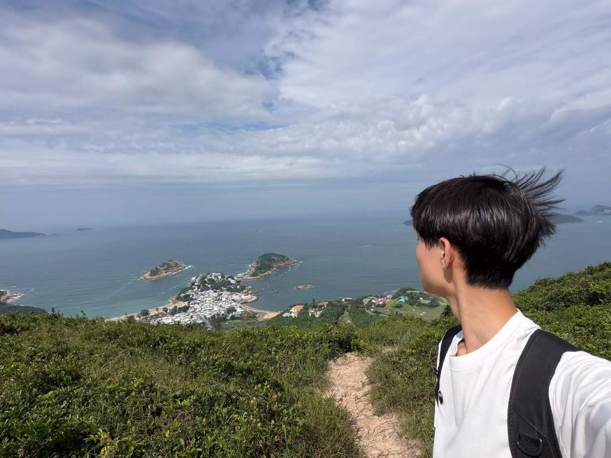
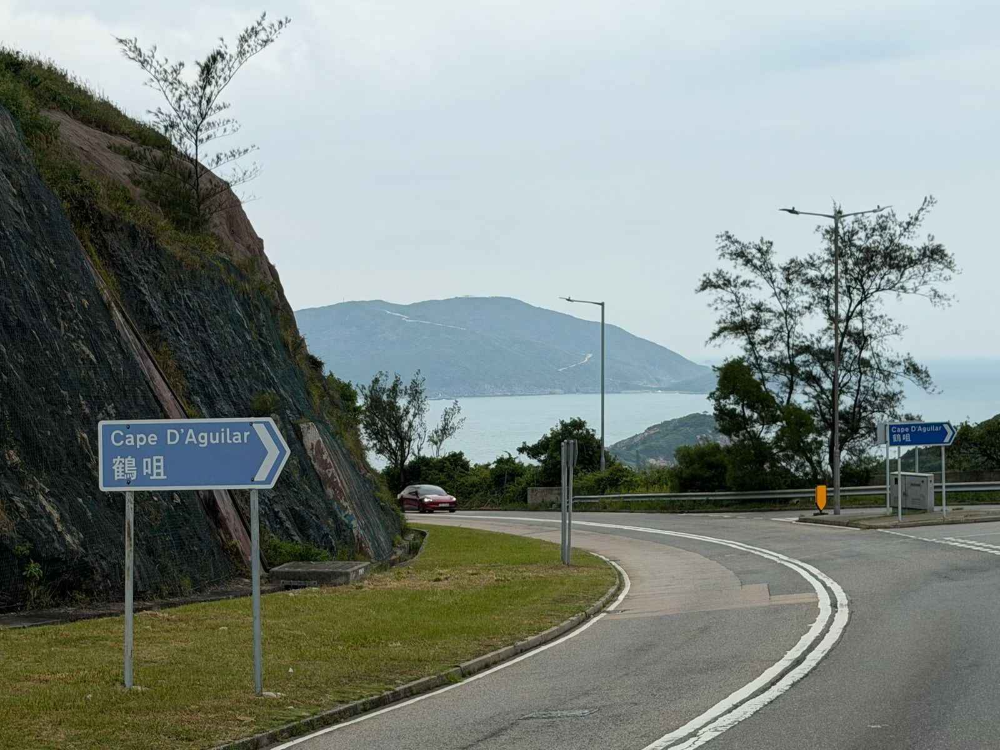
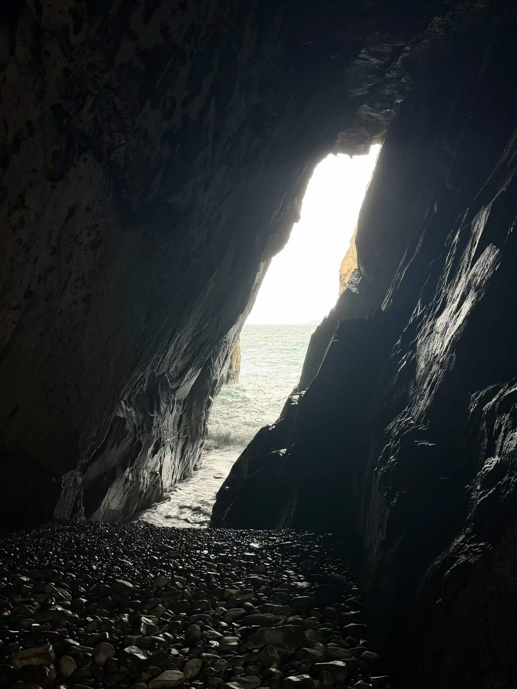
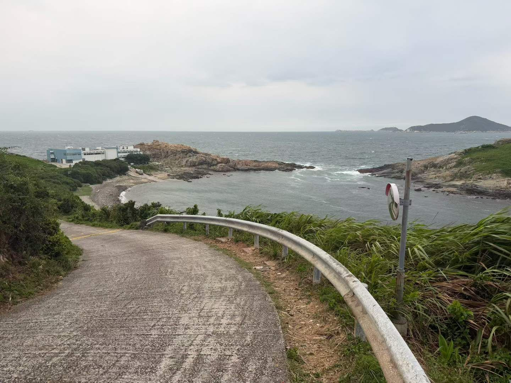
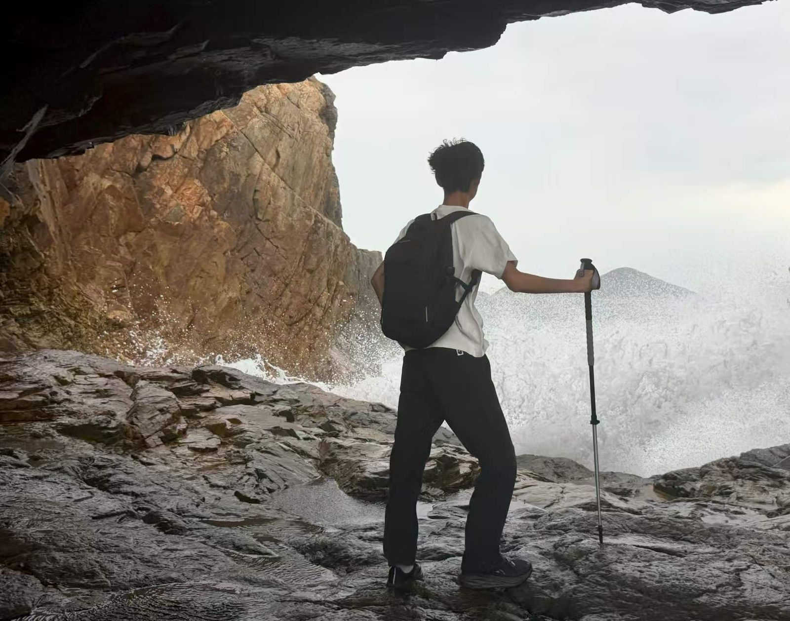
Walk 2
Early October · phone in my backpackIn early October I walked the same route again, alone, and this time my phone stayed in my backpack. I found the way using the trail signs and what I remembered from the first walk. I took no photos, posted nothing, and left my messages until I was on my way to supper. More than once I wanted to stop and photograph the views again, but I remembered why I was there. I also shouted far more than on the first walk, a long "ahhh" at the viewpoints and on the uphill sections, letting go of the pressure that builds up over my weekdays of lessons and coursework. Shouting is part of who I am, and I think I did it more because my phone was no longer filling those moments. I felt more alive than on the first walk, as if my brain had been fully recharged.
No photos
There are no photos from my second walk. That gap is part of the evidence.
What it shows. Together, the two walks show both sides of technology's role in hiking: on the first, technology sent me to the trail; on the second, I went there to escape it. The first walk fits the second answer: technology drives hiking. Liangbulu made the route easy to follow, and Instagram turned the walk into familiar images, the kind of repeated "Instagrammable" scenes Arts et al. (2021) describe. Caring about the likes showed that part of the walk was being performed for an audience (Hollenbaugh, 2021).
The second walk fits the first answer: escape. My material conditions were the same on both walks, but my quality of life, in the OECD's (2015) terms, was not: I felt better, and the pressure of my weekdays eased, which touches subjective well-being and work-life balance. The phone was not the only difference, though. By the second walk I already knew the route, which may also have helped me relax. Nor was the escape clean. I could find my way without the app only because the app had shown me the route the first time. I did feel more like myself on the second walk, but that feeling rested on what the app had taught me, which is why I share Syvertsen and Enli's (2020) doubt that a detox simply returns us to some authentic self.
What it taught me about my art of living. This experience showed me the first two parts in order. Liangbulu led me to Dragon's Back, which is part 1 working as it should. But on that first walk the screen never stepped back, so I staged the walk for Instagram instead of living it. The second walk showed me what part 2 feels like: the same trail, lived instead of performed.
Stage 5 · Experience 2
Lantau with strangers
For my second experience, I tried something new for me: hiking with strangers I found online. On Xiaohongshu, I found a post from a group looking for more people to walk Lantau Trail Section 2, from Nam Shan Campsite to Pak Kung Au, and I joined them on Sunday 1 November 2026.
We chose the route for two reasons. It was the season when the golden silver grass is in full bloom, and the stone houses on the climb appear on the cover of Eason Chan's album TASTE the ATMOSPHERE. All of us wanted pictures there, and so did many others: the trail was packed.
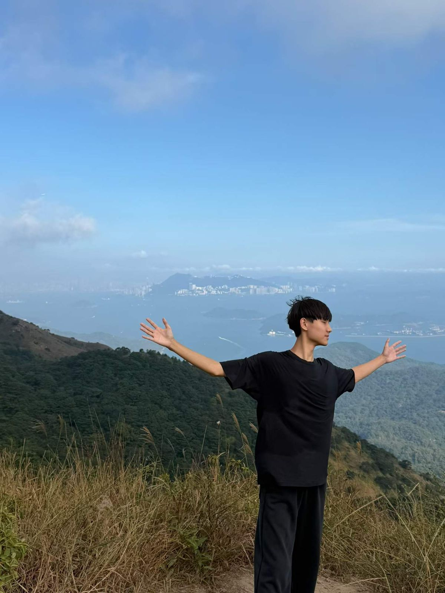
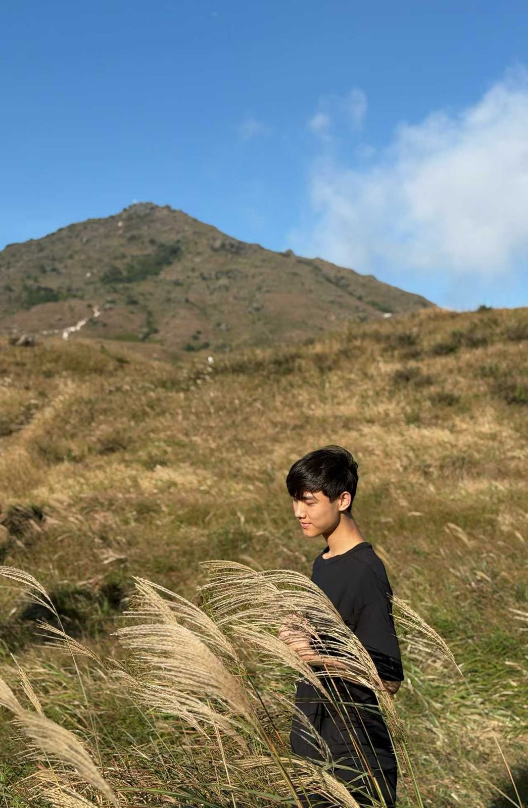
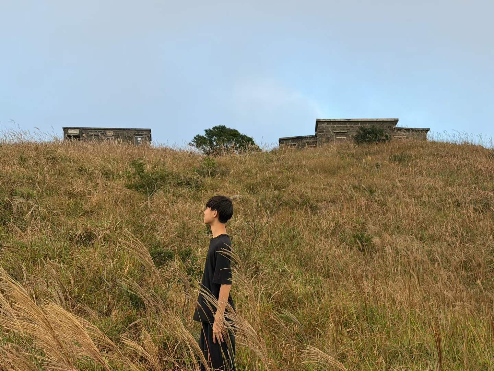
The walk did not go the way the photos promised. On the way up Yi Tung Shan, thick fog closed in, the air turned cool, and we could see almost nothing. Later the views opened up, and at sunset, one of the goals of our hike, the sky filled with fiery, colourful clouds. I still find it hard to describe, but it made the day worth it, and all of us were exhilarated. Along the way, we talked to each other face to face rather than through our phones. No one climbed onto the stone houses, but many people, me included, stepped into the silver grass to find a better spot for photos.
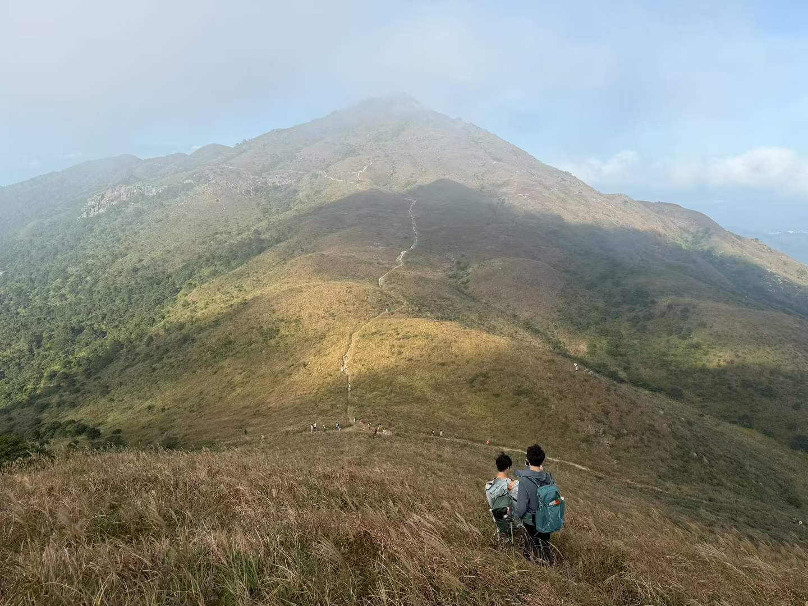
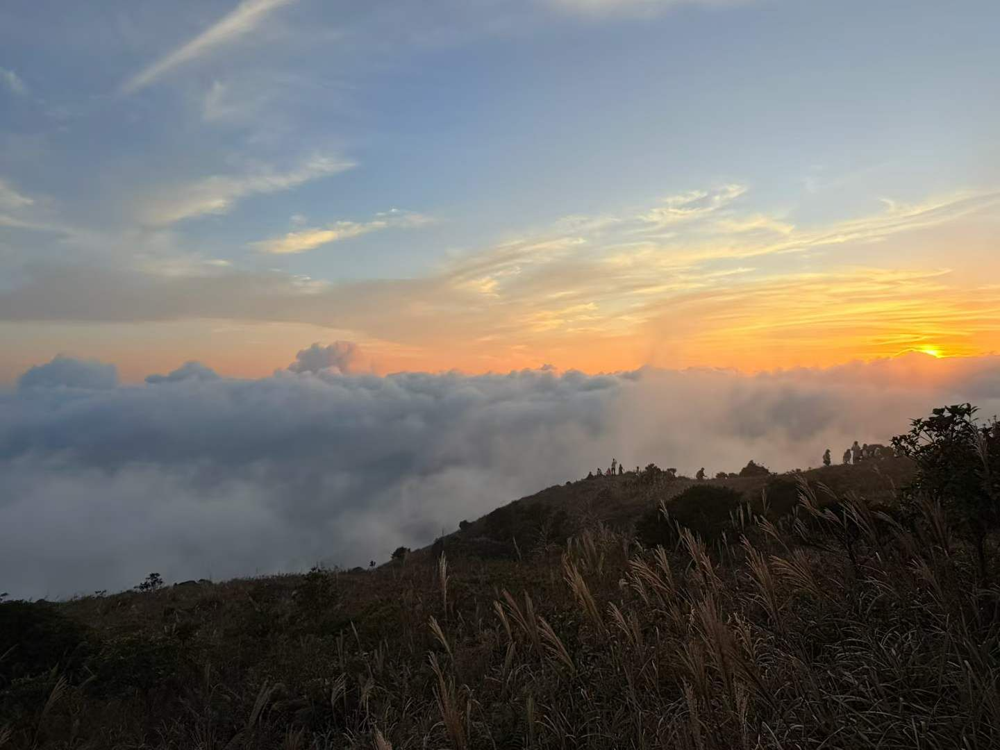
What it shows. This hike combined the second and third answers. Xiaohongshu formed our group, which matches Torres's (2020) finding that technology acts as a catalyst for groups built around a shared interest. An image also chose the destination. In November 2025, the South China Morning Post reported that hundreds of mainland Chinese tourists flocked to the area, nicknamed "Mount Eason", drawn by the silver grass and the album cover (Lo, 2025). The Standard attributed the influx to a trend on Xiaohongshu that encouraged users to recreate the scene on the cover (Cui, 2025), and Now News reported visitors picking the grass as photo props, stepping into it despite "do not trample" signs, and climbing onto the roofs of the stone cabins (Now News, 2025). This is the global side of my question. A singer's album and a mainland Chinese platform drew crowds across a border to a Hong Kong hillside to reproduce the same picture, the kind of repetition Arts et al. (2021) found on Instagram. The same platform brought me there too.
Yet the part of the day I remember best was the part no photo had promised. The fog and the sunset could not be planned or reproduced, and the conversations happened because our phones were away. In quality-of-life terms, the day lifted my subjective well-being through other people's company. It also touched environmental quality, a dimension of quality of life that belongs to everyone (OECD, 2015): each person who steps into the grass for a better angle, including me, tramples a little of what drew us there.
What it taught me about my art of living. Lantau tested all three parts. Part 1 worked: an app led me to a trail and to people I would never otherwise have met. Part 2 worked once the fog rolled in and the conversations started. Part 3 is where I fell short. I stepped into the grass for a photo like everyone else, a small version of what the news reports described. Sharing with respect starts before a photo is posted, with where I choose to stand when I take it.
Stage 6 · My answer
Led there, present, careful
So why has hiking become popular in the digital age? My experiences suggest that the three answers are not rivals: technology both sends us to the trails and is what we go there to escape, and online groups turn strangers into companions offline.
In Hong Kong, COVID-19 added a push that had nothing to do with screens. Technology does not simply pull people away from nature or push them towards it. It does both, often on the same day.
Beyond the trail. Hiking, though, was only where I looked. Off the trail, technology leads me into real experiences too. Through SocialCareer, an online volunteering platform, I have applied for voluntary work, taken part in volunteering events, and made new friends. As with the Xiaohongshu group on Lantau, the platform opened the door, but the work and the friendships happened offline, much like the catalyst role Torres (2020) describes.
That is why my art of living is to use technology as a way into real experiences, not a replacement for them. The first part, letting technology lead me there, is the easiest, because apps and platforms are designed to do exactly that, whether the door opens onto a trail, a hiking group or a volunteering event. The second part, living the experience instead of staging it, takes a conscious choice, such as leaving my phone in my bag or talking to the person beside me. My two best moments, the shouting on Dragon's Back and the sunset on Lantau, both happened with my phone put away. What I am really after is how those moments felt: more alive and recharged on Dragon's Back, and connected to people I had only just met on Lantau. Technology earns its place in my life when it leads me to moments like these, and it should step aside when it gets between me and them.
The third part, sharing with respect, is the one I am still learning, and it is where my choices as a citizen meet the global picture. When many people share the same images, the result is crowded trails, trampled grass, and visitors crossing a border to repeat one photo. Sharing is not only a problem, though. The same platform that crowded the hillside also found me a group, and Arts et al. (2021) found that some users push back against repetitive images by posting unpolished pictures. One hiker cannot change that pattern alone, but the outdoor ethics organisation Leave No Trace offers a starting point: its 2018 social media guidelines ask hikers to tag photos thoughtfully and to consider the story an image tells (Washington Trails Association, 2018).
Hiking is where I will test part 3 first, so I am setting myself three strategies for my next hike, each drawn from what this portfolio taught me:
- Stay on the path even when a better angle is one step into the grass, because I saw on Lantau how many single steps add up.
- Think twice before tagging the exact location of a fragile spot, as Leave No Trace advises.
- Post the moments no one else has, such as the fog, instead of only the classic shot: the quiet pushback against repeated images that Arts et al. (2021) describe.
I set out to understand why hiking is popular in the digital age. I end with a clearer idea of how I want to live in it:
Led there by technology, present once I arrive, and careful about what I leave behind, on the hillside and online.
References
Arts, I., Fischer, A., Duckett, D., & van der Wal, R. (2021). The Instagrammable outdoors – Investigating the sharing of nature experiences through visual social media. People and Nature, 3(6), 1244–1256. https://doi.org/10.1002/pan3.10239
Cui, J. (2025, November 16). Xiaohongshu trend sparks tourist influx at Sunset Peak, coinciding with trail running race. The Standard. https://www.thestandard.com.hk/news/article/316965/Xiaohongshu-trend-sparks-tourist-influx-at-Sunset-Peak-coinciding-with-trail-running-race
Hollenbaugh, E. E. (2021). Self-presentation in social media: Review and research opportunities. Review of Communication Research, 9, 80–98. https://doi.org/10.12840/issn.2255-4165.027
LegCo Research Office. (2022). Conservation of country parks in Hong Kong (ISSH26/2022). Legislative Council Secretariat. https://www.legco.gov.hk/research-publications/english/2022issh26-conservation-of-country-parks-in-hong-kong-20221025-e.pdf
Lo, H.-y. (2025, November 15). Hikers flock to Hong Kong's "Mount Eason" for Sunset Peak silver grass, album art. South China Morning Post. https://www.scmp.com/news/hong-kong/society/article/3332887/be-mindful-trail-runners-passing-hong-kongs-sunset-peak-hikers-told
Now News. (2025, November 11). 大東山大批遊人賞芒草 漁護署派員維持秩序 [Crowds visit Sunset Peak for silver grass; AFCD sends staff to keep order]. https://news.now.com/home/local/player?newsId=626177
OECD. (2015). How's life? 2015: Measuring well-being. OECD Publishing. https://doi.org/10.1787/how_life-2015-en
Outdoor Industry Association. (2025). 2025 outdoor participation trends report. https://oia.outdoorindustry.org/exec-summary-outdoor-participation-trends
Radtke, T., Apel, T., Schenkel, K., Keller, J., & von Lindern, E. (2022). Digital detox: An effective solution in the smartphone era? A systematic literature review. Mobile Media & Communication, 10(2), 190–215. https://doi.org/10.1177/20501579211028647
Syvertsen, T., & Enli, G. (2020). Digital detox: Media resistance and the promise of authenticity. Convergence, 26(5–6), 1269–1283. https://doi.org/10.1177/1354856519847325
Torres, E. N. (2020). Online-to-offline interactions and online community life cycles: A longitudinal study of shared leisure activities. Leisure Sciences, 42(1), 32–50. https://doi.org/10.1080/01490400.2017.1392913
Washington Trails Association. (2018). Leave No Trace releases new social media guidelines. https://www.wta.org/news/signpost/leave-no-trace-provides-new-social-media-guidelines